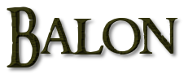

Balon Greyjoy é o chefe da Casa Greyjoy de Pyke; e assim, lorde supremo das Ilhas de Ferro. Ele é capitão da Grande Lula Gigante. Ele é um seguidor dos Costumes Antigos dos homens de ferro e tentou levá-los de volta a proeminência. Em 289 d.C., ele proclamou a independência das Ilhas de Ferro sobre o Trono de Ferro porém foi derrotado pelas forças de Rei Robert I.
Balon é o filho mais velho sobrevivente de Lorde Quellon Greyjoy e de uma senhora da Casa Sunderly. Não é claro quando ele nasceu.
Balon aprendeu a navegar quando ele era ainda jovem e foi um capitão habilidoso. Aos dez anos, Balon escalara os Penhascos de Pederneira até a torre assombrada do Senhor Cego. Aos treze anos, conseguia governar os remos de um dracar e dançar a dança dos dedos tão bem quanto qualquer homem das ilhas. Aos quinze velejara com Dagmer Boca-Rachada até os Degraus e passara um verão na pilhagem. Matara aí o primeiro homem e tomara as duas primeiras esposas de sal. Aos dezessete ele capitaneava seu primeiro dracar. Mais tarde, ele freqüentemente ia a ataques e era conhecido por sua ferocidade e destemor. Balon ordenou que o mesmo tratamento fosse usado no meistre, que morreu juntamente com a madrasta de Balon.
Ele sucedeu seu pai como Lorde Ceifeiro de Pyke quando este morreu na Batalha do Vago durante a Rebelião de Robert. Quando ele retornou para Pyke, ele descobriu que seu irmão mais novo, Urrigon havia morrido de gangrena após ser ferido na dança dos dedos. O meistre tentou salvar a mão do garoto mas suas poções falharam e Urrigon (com quatorze anos de idade) perdeu sua vida. Balon ordenou que o mesmo tratamento fosse usado no meistre, que morreu juntamente com a madrasta de Balon.
Balon se casou com Alannys Harlaw, que lhe deu três filhos e uma filha: Rodrik, Maron, Asha, e Theon.

Balon